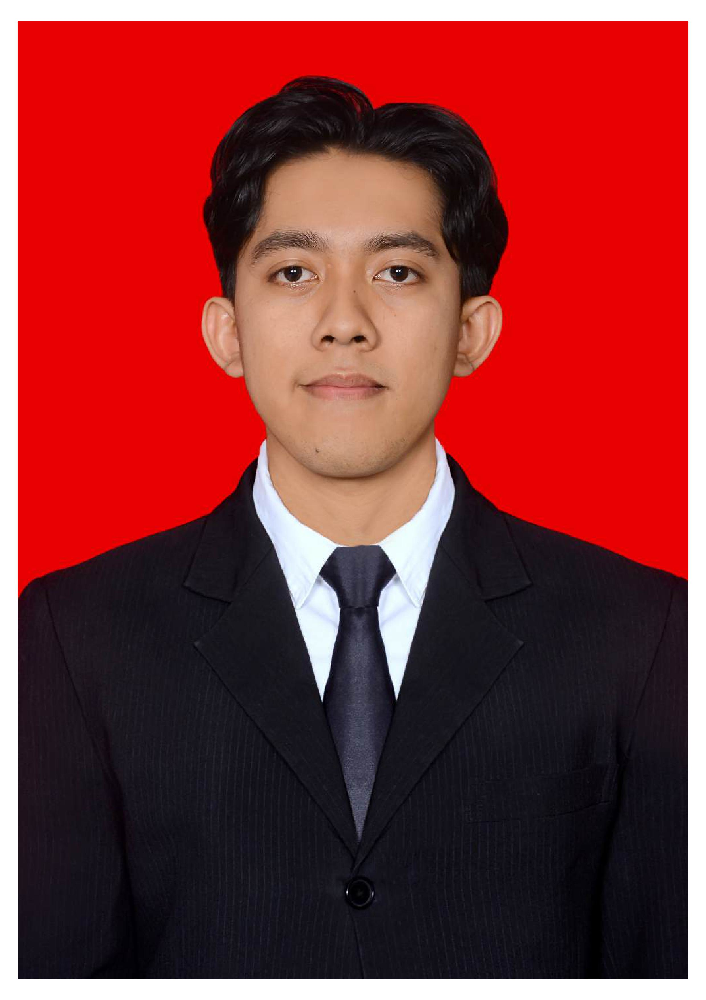

Saya membangun formulir pengaduan dengan unggahan bukti, pelacakan status, dan akses khusus petugas.
Next.js · Supabase · PostgreSQLPORTOFOLIO / RISFANDA AUDIARRAHMAN CHARISMA Terbuka untuk peluang baru
Halo, panggil saya Ifan.
Developer web
dari Mataram.
Saya membangun aplikasi dengan Next.js dan Laravel. Di sini ada proyek layanan pengaduan, toko kopi, desain UI/UX, dan penelitian fraud OTP yang saya kerjakan.
Lihat proyek saya
RISFANDA AUDIARRAHMAN CHARISMAUniversitas Mataram, 2026
PENGEMBANGAN WEB / UI/UX / ANALISIS DATALIHAT PROYEK
01 / PROYEK
Proyek yang saya kerjakan
Aplikasi web, prototipe Figma,
dan penelitian tugas akhir.
5 proyek / 2025–2026
Toko kopi dengan keranjang, checkout, dan panel admin.
Laravel · MySQL · Alpine.jsDesain pemesanan tiket dari katalog sampai e-ticket.
Figma · Prototyping · User flowClustering data survei mahasiswa dengan metode K-Means.
Python · K-Means · Data analyticsDesain aplikasi undian struk belanja untuk BKD Kota Mataram.
Figma · Wireframing · Accessibility02 / PROFIL
Tentang saya
Nama lengkap saya Risfanda Audiarrahman Charisma. Saya lulus S1 Teknik Informatika dari Universitas Mataram pada 2026 dengan IPK 3.58.
Pada proyek BP3MI Protect, saya mengerjakan formulir pengaduan, pelacakan laporan, dan akses petugas dengan Supabase. Di Kopi Senja, saya membangun keranjang berbasis database dan pengelolaan menu dengan Laravel.
Saya terbuka untuk kesempatan sebagai fullstack developer, data analyst, maupun kolaborasi pengembangan produk.
3.58/ 4.00IPK kelulusan
2026S1 Teknik Informatika
MataramLombok, Indonesia
03 / KEAHLIAN
Teknologi yang saya gunakan
Digunakan dalam proyek web,
perancangan antarmuka, dan penelitian.
01
Pengembangan web
Next.js · TypeScript · JavaScript · PHP · Laravel
Tailwind CSS · Alpine.js · HTML & CSS
02
Database & layanan cloud
Supabase · PostgreSQL · MySQL
Authentication · Row Level Security · Storage
03
Analisis data & machine learning
Python · K-Means Clustering
Data preprocessing · Data analytics
04
Desain & alat kerja
Figma · Wireframing · Interactive prototyping
Git / GitHub · Vercel
04 / PENGALAMAN & PENDIDIKAN
Pengalaman dan pendidikan
Magang di BKD Kota Mataram,
kuliah, dan pelatihan tambahan.
UI/UX Design Intern
Badan Keuangan Daerah Kota MataramMerancang aplikasi public reward untuk partisipasi masyarakat melalui unggahan struk belanja. Menerjemahkan kebutuhan instansi menjadi user flow, wireframe, dan prototipe yang mudah dipahami.
S1 Teknik Informatika
Universitas Mataram · IPK 3.58 / 4.00Riset tugas akhir: clustering tingkat kerentanan mahasiswa terhadap fraud OTP pada transaksi digital menggunakan metode K-Means.
2026 / SERTIFIKASIJUN APR
Competency in Computer Science
Coding Studio — School of AI
Intro to Data Analytics
RevoU
05 / KONTAK Terbuka untuk pekerjaan dan kolaborasi
Hubungi saya
Kirim email
Untuk peluang kerja, kolaborasi,
atau sekadar bertukar pikiran.